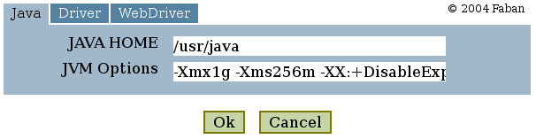

The submission form is an XML editor used for entering
benchmark configuration. We pre-generate this file from the
configuration file at deployment if it is not present already. You can
specify the name of the form in the benchmark.xml, say
<config-form>config.xhtml</config-form>.
If there is no
benchmark.xml provided, then the generated form will have the default
name as config.xhtml.
A sample tabsheet from a pre-generated config.xhtml will look
somewhat
like this:

To pre-generate the config.xhtml and/or to customize it, do the
following:
If you are happy with the generated form, you can ignore the rest of this page.
The submission form consists of 5 major sections, 4 of them need to be customized for your specific benchmark:
The rest of this page will discuss the individual sections of the configuration form that needs customization:
This section declares the bindings of the submission form to the structure of the configuration file. The binding section has exactly the same structure with direct XPath references to the elements and attributes in the configuration file. The XML segment below shows part of the configuration file from our web101 sample:
<?xml
version="1.0" encoding="UTF-8"?>
<webBenchmark>
<jvmConfig
xmlns="http://faban.sunsource.net/ns/fabanharness">
<javaHome>/usr/java</javaHome>
<jvmOptions>-Xmx1g -Xms256m
-XX:+DisableExplicitGC</jvmOptions>
</jvmConfig>
.....
And the following is the corresponding binding in the submission form:
.....
<html
xmlns:xforms="http://www.w3.org/2002/xforms"
xmlns:fa="http://faban.sunsource.net/ns/faban"
xmlns:fh="http://faban.sunsource.net/ns/fabanharness"
xmlns:fd="http://faban.sunsource.net/ns/fabandriver">
.....
<xforms:model id="benchmark-model">
<xforms:bind id="bind-webBenchmark"
xforms:nodeset="/webBenchmark">
<xforms:bind id="bind-jvmConfig"
xforms:nodeset="fh:jvmConfig">
<xforms:bind id="bind-javaHome"
xforms:nodeset="fh:javaHome"/>
<xforms:bind id="bind-jvmOptions"
xforms:nodeset="fh:jvmOptions"/>
</xforms:bind>
.....
Note that the jvmConfig element and it's child elements
belong to the http://faban.sunsource.net/ns/fabanharness
namespace. At the beginning of the submission form we declared the
namespace aliases of this namespace to fh following the Faban standard.
So we can directly refer to the corresponding elements using the fh
prefix. From this point on, the form may refer to the fields by the
bind
ids such as bind-javaHome.
The addition of a xforms:type attribute causes the form to automatically do validation at run time. If the user enters anything other than an interger > 0, an error will be flagged on submission of the form. The default type of binding is a String, thus allowing any input.
<xforms:bind id="bind-steadyState"
xforms:nodeset="fa:steadyState"
xforms:type="positiveInteger"/>
Labels allow you to specify the labels used on your form. They are referenced from the input fields by their XPath. Although you can place labels directly into the input field attributes, it is preferable to keep them separate for readability as well as localization(if desired). The sample below shows how labels are declared. Their XPaths will be referenced from the tabs and the input fields, discussed later in this page.
<xforms:model id="benchmark-labels">
<xforms:instance id="benchmark-label-names">
<labels>
<benchmark>Sample Web Benchmark
1</benchmark>
<jvmConfig>Java</jvmConfig>
<javaHome>JAVA HOME</javaHome>
<jvmOptions>JVM Options</jvmOptions>
.....
<ok>Ok</ok>
<cancel>Cancel</cancel>
</labels>
</xforms:instance>
</xforms:model>
A tab on the input form defines a set of fields that are grouped together in the configuration file. Each tab is defined by an XForms trigger element as shown in our example jvmConfig:
<xforms:trigger id="trigger-jvmConfig">
<xforms:label xforms:model="benchmark-labels"
xforms:ref="/labels/jvmConfig"/>
<xforms:action id="action-jvmConfig">
<xforms:revalidate xforms:model="benchmark-model"
id="revalidate-jvmConfig"/>
<xforms:toggle id="toggle-jvmConfig"
xforms:case="case-jvmConfig"/>
</xforms:action>
</xforms:trigger>
In this trigger, the xforms:label element references the
benchmark-labels model at /labels/jvmConfig. Referencing the
/labels/jvmConfig above, the tab label is "Java". The action element
and its children states that the form should bind to benchmark-model
declared earlier. This element usually does not need to be edited. The
xforms:toggle and its xforms:case attribute states which input form to
use for this tab. In this example, it references case-jvmConfig. Next,
we'll go through the input fields in this tab.
Each tab is defined by the xforms case element and all case elements are children of a single xforms: switch element. Below, we illustrate the input form for the jvmConfig tab (labeled Java).
<xforms:switch id="switch">
<xforms:case id="case-jvmConfig" xforms:selected="true">
<xforms:group id="group-nogroup">
<xforms:input id="input-javaHome"
xforms:bind="bind-javaHome">
<xforms:label xforms:model="benchmark-labels"
xforms:ref="/labels/javaHome"/>
</xforms:input>
<xforms:input id="input-jvmOptions"
xforms:bind="bind-jvmOptions">
<xforms:label xforms:model="benchmark-labels"
xforms:ref="/labels/jvmOptions"/>
</xforms:input>
</xforms:group>
</xforms:case>
..... subsequent tabs go here .....
</xforms:switch>
Whenever the "Java" tab gets selected, the screen defined by this case-jvmConfig will show up. In this example, the form will show two text fields, one for the JAVA_HOME and another for JVM Options. These text fields are bound to bind-javaHome and bind-jvmOptions which reference the corresponding XPaths in the configuration file.
This example shows only simple text fields. If you look into other tabsheets in the same submission form, you'll see you have a large choice of components to select from, ranging from text areas, text fields, and selection boxes. We also commonly group related fields using a separate xforms:group element with an id other than group-nogroup. The XForms engine organizes fields in each of the groups together and draws a border aroud them as appropriate. A group may also have a xforms:label elements referencing labels to display on the group border. This gives the user a better understanding of the grouping on screen.
Now, understanding the concepts, please take your time to dive into the other tabsheets that provide groups and different kinds of fields. Soon you'll be able to come up with your customized submission form.